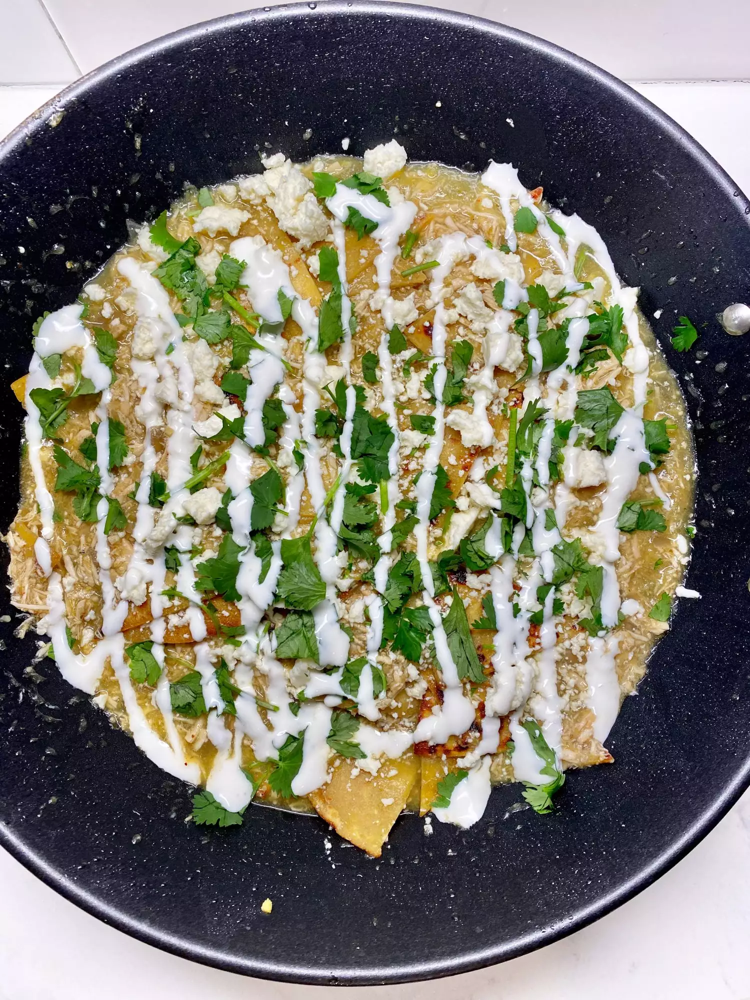

Lamb Souvlaki
This is what the result will look like!

Description
This delicious Mexican dish makes for a great weeknight dinner or even breakfast when paired with eggs.
Ingredients
- 1 large skinless, boneless chicken breast
- 1 (16 ounce) jar salsa verde, divided
- 1 cup chicken broth
- 1 medium yellow onion, chopped
- 1 teaspoon chili powder
- 1 teaspoon ground cumin
- ½ teaspoon cayenne pepper
- salt and freshly ground black pepper to taste
- 2 tablespoons olive oil
- 8 (6 inch) soft corn tortillas
- ½ cup sour cream
- 1 tablespoon milk, or more as needed
- 2 tablespoons crumbled cotija cheese, or to taste
- ¼ cup chopped fresh cilantro
Directions
- Combine chicken breast, half of the salsa verde, chicken broth, onion, chili powder, cumin, cayenne, salt, and pepper in a slow cooker. Cook until chicken is cooked through, on Low for 6 hours or High for 3 hours.
- Remove chicken from sauce and shred in a bowl with 2 forks. Return to the sauce in the slow cooker and mix to combine.
- Heat a large skillet over medium heat. Add olive oil and heat until shimmery. Cut tortillas into triangles; add tortilla triangles to the hot oil and cook, flipping every minute, until golden, 8 to 10 minutes.
- Add shredded chicken, slow cooker sauce, and remaining salsa verde to tortillas. Mix and heat until everything is warmed through.
- Meanwhile, stir together sour cream and as much milk so sour cream can be drizzled.
- Remove tortilla mixture from the heat. Garnish with cotija cheese, cilantro, and drizzle with thinned sour cream mix.
Return to main page